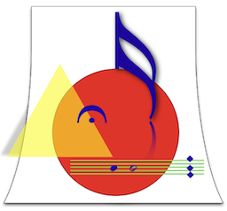
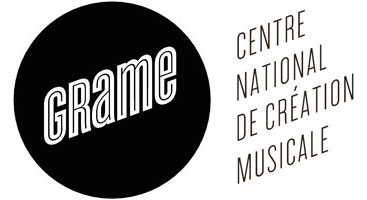
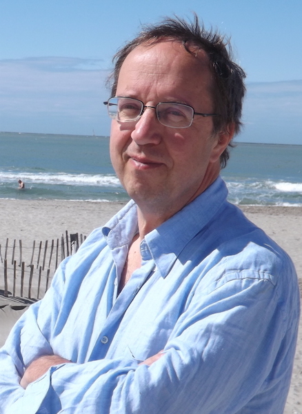
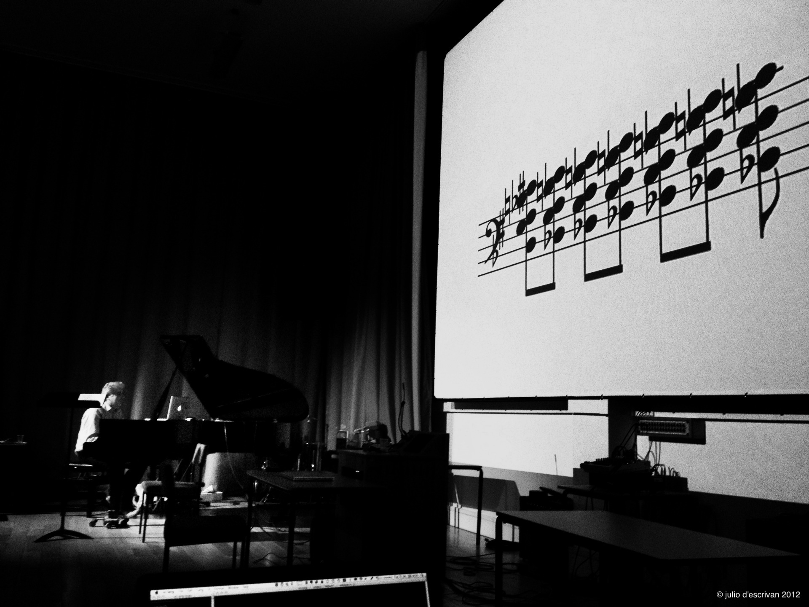

INScore is an environment for the design of interactive, augmented music scores.
It's an open source project that runs on the main platforms (Mac OSX, Windows, Linux).
The system is designed to be controled using OSC messages.
Music scores can be dynamically designed using any OSC capable application, but also using a scripting language, based on a textual version of OSC, extended to support advanced programming features.

INScore is an ongoing research project developped at GRAME.
It is used for music creation, pedagogy, modelling...
See the INScore page for more information.
INScore is running on MacOS X, Windows and Linux.
20 stations running Windows will be provided. They will be equiped with INScore and PureData. Headphones will be provided (but not for all stations).
You can bring your own computer as well. In this case, it's better to download and install INScore before the workshop.
You should also have an environment that is "OSC friendly" installed on your computer (typically Max/MSP or PureData).
If you plan to run INScore on a Linux computer, contact me before the workshop.
The workshop is organized and presented by Dominique Fober and Richard Hoadley.
See the Organizers section for more information.
The workshop presentations are now available as pdf files:
The workshop is hosted by the Paris-Sorbonne University. It will take place at
The workshop will take place on Thursday May 28, from 13:30 to 17:30
 Dominique Fober has both a scientific and musical background. He is doing computer music research at Grame - National Center for Music Creation based in Lyon, France - for over 20 years. His research is concerned mainly with software architecture for real-time music systems, languages for musical composition, and music notation and representation systems. He has created, as author or joint author, many musical systems and programs. His most recent work focuses on the extension of the music score, with the aim of covering the needs of the contemporary music creation as well as those of technology enhanced music pedagogy. His approach of the music notation has been turned into the INScore environment that he's developping since 2009.
 In recent years Richard Hoadley has composed using his own systems of physical computing and algorithmic generation which together make original compositions in real-time. He has developed a number of devices which investigate and facilitate physical interactions with musically expressive algorithms for installations, performances (including dance) and therapeutic environments. 'Calder's Violin' included methods for the live presentation of algorithmically generated music notation. In 'Quantum Canticorum' and ‘Semaphore’ physical movement and algorithms combine with live notation in simultaneous performances of cross-domain expression.